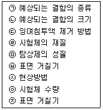

침투비파괴검사기사(구) (2010-09-05 기출문제)
1과목: 침투탐상시험원리
1. 침투탐상시험에서 침투제가 시험부에 부착하므로 생기는 침투제의 손실을 뜻하는 용어는?
- Dragout
- Bleedout
- Dip rinse
- Blotting
(정답률: 알수없음)

2. 침투탐상시험의 신회성을 유지하기 위한 조치 사항으로 거리가 먼 것은?
- 자격과 능력을 갖춘 검사자가 검사를 수행한다.
- 사용 중인 탐상제는 성능 점검이 필요하지 않다.
- 탐상제 구입시 기준 탐상제를 채취하여 보존한다.
- 자외선 조사장치의 자외선 강도를 정기적으로 점검한다.
(정답률: 알수없음)
3. 침투탐상시험에 사용되는 자외선조사장치 수은등의 유효수명에 대한 설명으로 옳은 것은?
- 초기광량의 약 5% 정도 빛이 감소하는 시점까지의 시간
- 초기광량의 약 10% 정도 빛이 감소하는 시점까지의 시간
- 초기광량의 약 20% 정도 빛이 감소하는 시점까지의 시간
- 초기광량의 약 50% 정도 빛이 감소하는 시점까지의 시간
(정답률: 알수없음)
4. 침투탐상시험에서 검식현상제의 품질관리를 위해 일반적으로 사용되는 검사 방법은?
- 보통 육안으로 관찰한다.
- 비중을 측정하여 시험한다.
- 현상제의 수분함량 측정으로 시험한다.
- 용해시켜 침투제의 오염 여부를 점검한다.
(정답률: 알수없음)
5. 침투액의 성질은 점성, 표면장력, 적심성의 3가지 변수에 의해 침투인자가 결정된다. 점성의 변수에 영향을 받는 동적 침투인자(KPP)를 나타내는 식으로 옳은 것은? (단, γ : 표면장력, θ : 접촉각, η : 점성을 나타낸다.)
- KPP = γ · η / cos θ
- KPP = γ · cos θ / η
- KPP = η · cos θ / γ
- KPP = γ · η · cos θ
(정답률: 알수없음)
6. 후유화성 침투탐상시험에서 유화시간을 결정하는데 고려해야 할 사항과 거리가 먼 것은?
- 유화제의 종류
- 예상결함의 종류
- 시험표면의 거칠기
- 분사노즐을 통한 수압
(정답률: 알수없음)
7. 다음 중 비파괴시험적인 요소를 포함하고 있는 것은?
- 인장시험
- 굽힘시험
- 충격시험
- 경도시험
(정답률: 알수없음)
8. 중성자투과시험에 이용되는 중성자빔의 발생원과 거리가 먼 것은?
- 원자로
- 입자가속기
- X선 발생기
- 방상성 동위원소
(정답률: 알수없음)
9. 단조품의 내부결함 검출에 가장 적합한 비파괴검사법은?
- 자분탐상시험법
- 초음파탐상시험법
- 침투탐상시험법
- 와전류탐상시험법
(정답률: 알수없음)
10. 침투탐상시험에서 침투액의 점성은 침투액의 어떠한 성능에 가장 큰 영향을 미치는가?
- 침투력
- 세척성
- 형광성
- 침투속도
(정답률: 알수없음)
11. 열처리 공정이 끝난 항공우주용 비자성 재료의 표면균열 검출을 위하여 검사 속도가 빠르고 비용이 절며 하여 널리 활용되고 있는 비파괴검사법은?
- 자분탐상시험
- 초음파탐상시험
- 침투탐상시험
- 방사선투과시험
(정답률: 알수없음)
12. 방사선 투과사진상의 기하학적 불선명도에 영향을 주는 인자와 거리가 먼 것은?
- 선원의 크기
- 시험체의 밀도
- 시험체와 필름간 거리
- 선원과 시험체간 거리
(정답률: 알수없음)
13. 초음파탐상시험에 사용되는 초음파의 일종으로 고체, 액체 및 기체 모두에 존재하며 진동방향이 진행방향과 평행한 초음파는?
- 종파
- 횡파
- 판파
- 표면파
(정답률: 알수없음)
14. 재료 내부의 동적거동을 비파괴적으로 평가하는 시험은?
- 방사선투과시험
- 자분탐상시험
- 와전류탐상시험
- 음향방출시험
(정답률: 알수없음)
15. 미세한 표면 홈을 발견하기에 가장 우수한 침투탐상시험법은?
- 수세성 염색침투탐상시험법
- 후유화성 염색침투탐상시험법
- 후유화성 형광침투탐상시험법
- 용제제거성 형광침투탐상시험법
(정답률: 알수없음)
16. 철강재를 용접하여 일정시간 경과 후 표면 및 표면직하의 결함 검출에 경제적이고 손쉬운 비파괴검사법은?
- 음향방출시험
- 초음파탐상시험
- 자분탐상시험
- 방사선투과시험
(정답률: 알수없음)
17. 제품을 설계할 때 개념설계, 예비설계, 배치설계, 상세설계의 단계로 이루어진다고 한다. 이 중 비파괴검사의 적용성을 고여해야 할 단계는?
- 개념설계
- 예비설계
- 배치설계
- 상세설계
(정답률: 알수없음)
18. 비파괴검사법 중 검사 속도가 빠르고 자동화가 쉬우며, 전도체의 표면 결함 검출에 감도가 우수한 것은?
- 누설검사
- 초음파탐상시험
- 방사선투과시험
- 와전류탐상시험
(정답률: 알수없음)
19. 시험부의 양쪽 면에 접근 가능해야만 검사를 할 수 있는 비파괴검사법은?
- 자분탐상검사
- 침투탐상검사
- 초음파탐상검사
- 방사선투과검사
(정답률: 알수없음)
20. 방사선투과시험에서 일반적으로 조사선량을 측정하기 위하여 사용되는 원리로써 기체에 방사선이 닿으면 전기적으로 중성이던 기체의 원자 또는 분자가 전자와 양이온으로 분리되는 작용을 무엇이라 하는가?
- 전리작용
- 형광작용
- 사진작용
- 조사작용
(정답률: 알수없음)
2과목: 침투탐상검사
21. 침투탐상검사시 사용되는 탐상제에 대한 설명으로 옳은 것은?
- 침투탐상검사에 사용되는 탐상제는 모두 캔에 밀봉 되어 있다.
- 침투탐상제는 캔에 봉입되어 있지만 가열하여도 폭발되지 않는다.
- 산업현장에서 사용되는 침투탐상제는 사람에게 무해하다.
- 탐상제를 사용한 후 스프레이 캔은 반드시 구멍을 뚫어 폐기 처분한다.
(정답률: 알수없음)
22. 수세성 침투액에 대한 물의 오염을 측정하는 계산식으로 옳은 것은?
- 오염도(%) = (침투액의 양 + 첨가한 물의 양 / 첨가한 물의 양) × 100
- 오염도(%) = (첨가한 물의 양 / 침투액의 양 + 첨가한 물의 양) × 100
- 오염도(%) = (침투액의 양 / 첨가한 물의 양) × 100
- 오염도(%) = (첨가한 물의 양 / 침투액의 양) × 100
(정답률: 알수없음)
23. 주조품 시험체 표면의 산화물을 제거하기 위한 가장 효과적인 전처리 방법은?
- 산세척
- 초음파 세척
- 고압용수 세척
- 와이어 브러싱
(정답률: 알수없음)
24. 주조품의 검사 중 주로 단면이 변화하는 분위에 폭이 매우 좁은 선형지시가 나타났다면 검출된 지시의 예상되는 불연속으로 가장 적절한 것은?
- 기공(Porodity)
- 콜드셧(Cold shut)
- 수축관(shrinkage)
- 개재물(Inclusion)
(정답률: 알수없음)
25. 유화제의 색상이 오렌지색 또는 핑크색이 주된 이유는?
- 현상액과 구별하기 위해서
- 침투액과 구별하기 위해서
- 유성과 수성을 구별하기 위해서
- 계면활성제의 성분을 구별하기 위해서
(정답률: 알수없음)
26. 매우 미세한 균열이 존재할 것으로 예상되는 유리를 침투탐상검사할 때 효과적인 검사 방법은?
- 하전입자법
- 수세성 형광침투법
- 후유화성 색채대비법
- 요제제거성 형광침투법
(정답률: 알수없음)
27. 주조품 검사에서 검출되는 균열성 결함 중 주조 단면의 두께가 변하는 부분의 근처에서 응고속도의 차이에 의해 발생하는 균열을 무엇이라 하는가?
- 냉간균열
- 피로균열
- 열간응력균열
- 핫테어
(정답률: 알수없음)
28. 수세성 형광침투탐상검사에 대한 설명으로 틀린 것은?
- 넓은 면적을 단 한번의 조작으로 탐상하기 쉽다.
- 열쇠구멍이나 나사부분도 어느 정도 시험 가능하다.
- 수분이 있으면 침투액의 성능이 현저히 저하된다.
- 비교적 얕은 결함의 검출에 대한 신뢰성이 높다.
(정답률: 알수없음)
29. 갈라짐 이외의 침투지시모양 가운데 그 길이가 나비의 3배 이상인 1개의 침투지시모양을 무엇이라 하는 가?
- 분산 침투 지시모양
- 연속 침투 지시모양
- 선상 친투 지시모양
- 원형상 침투 지시모양
(정답률: 알수없음)
30. 대비시험편을 사용하여 탐상조작의 적합여부를 점검하기 위한 방법의 설명으로 옳은 것은?
- 한쌍의 대비시험편에 각각 다른 탐상제를 다른 조건으로 적용하여 얻어진 지시모양을 비교한다.
- 한쌍의 대비시험편에 동일한 탐상제를 다른 조건으로 적용하여 얻어진 지시모양을 비교한다.
- 한쌍의 대비시험편에 동일한 탐상제를 동일한 조건으로 적용하여 얻어진 지시모양을 비교한다.
- 한쌍의 대비시험편에 각각 다른 탐상제를 동일한 조건으로 적용하여 얻어진 지시모양을 비교한다.
(정답률: 알수없음)
31. 침투탐상검사시 미세한 터짐이나 폭이 넓고 얕은 터짐에 가장 검출 성능이 우수한 시험 방법은?
- 수세성 형광침투탐상검사
- 수세성 염색침투탐상검사
- 후유화성 형광침투탐상검사
- 용제제거성 형광침투탐상검사
(정답률: 알수없음)
32. 침투탐상검사시 침투시간을 결정하는데 고려해야할 인자와 거리가 먼 것은?
- 시험체의 재질
- 시험체의 선팽창계수
- 예측되는 결함의 종류
- 시험체와 침투액의 온도
(정답률: 알수없음)
33. 침투탐상검사의 절차 중 붓칠을 적용해서는 안되는 공정은?
- 유화제 적용
- 침유액 적용
- 현상제 적용
- 현상제 제거
(정답률: 알수없음)
34. 다음은 침투탐상검사에서 탐상을 하기 전에 고려해야 할 사항을 나열한 것이다. 시험 방법의 선정에 고려해야 할 사항만을 모두 나열한 것은?

- ㉠, ㉡, ㉢, ㉣, ㉤, ㉥, ㉦
- ㉠, ㉡, ㉣, ㉤, ㉥, ㉧, ㉨
- ㉠, ㉡, ㉣, ㉤, ㉥, ㉦, ㉨
- ㉠, ㉡, ㉢, ㉣, ㉤, ㉧, ㉨
(정답률: 알수없음)
35. 결함의 분류에서 “사용 중 생성되는 결함”은?
- 랩
- 기공
- 피로균열
- 용입부족
(정답률: 알수없음)
36. 유화제의 적정한 성능을 유지하기 위해서는 주기적인 관리 및 점검이 필요하다. 유화제의 점검 사항이 아닌 것은?
- 농도
- 점성
- 형광휘도
- 수분함유량
(정답률: 알수없음)
37. 압연 판재에서 대표적으로 발견될 수 있는 불연속은?
- 탕계
- 백점
- 라미네이션
- 슬래그혼입
(정답률: 알수없음)
38. 알루미늄 재질로 생산한 제품을 침투탐상검사할 때 침투 시간을 가장 길게 하여야 하는 결함은?
- 용접부의 갈라짐
- 단조품의 갈라짐
- 용접부의 융합불향
- 주조품의 쇳물경계
(정답률: 알수없음)
39. 침투탐상제를 이용한 누설검사는 관통된 결함을 찾는 특수한 방법으로서 이에 대한 특성과 거리가 먼 것은?
- 표면이 거칠어도 검사는 할 수 있다.
- 표면에 약간의 이물질이 있어도 검사는 할 수 있다.
- 침투제를 도포한 반대면에 침투제가 묻지 않게 한다.
- 제거처리 부족에 의한 의사지시가 큰 문제점이 된다.
(정답률: 알수없음)
40. 비행기 날개와 같이 매우 크거나 길이가 긴 물체를 침투탐상검사할 때 침투액을 적용하는 가장 적합한 방법은?
- 침투액을 표면에 부어 적용한다.
- 매우 큰 붓을 사용하여 침투액을 적용한다.
- 침투액 분무와 시험체 사이에 정전기적 전위차를 걸어주고 분무가 되게 한다.
- 분할하여 부분적인 검사를 연속적으로 수행하므로 한번 수행할 분할 구역에만 침투액을 적용한다.
(정답률: 알수없음)
3과목: 침투탐상관련규격
41. 침투탐상 시험방법 및 침투지시모양의 분류(KS B 0816)에서 강용접부의 탐상시험시 시험면의 온도가 15~50℃의 범위일 때 표준 침투시간은 얼마인가?
- 5분
- 7분
- 10분
- 15분
(정답률: 알수없음)
42. 보일러 및 압력용기에 대한 표준침투탐상검사(ASME Sec.V Art.24 SE-165)에서 권고되는 단조강에 대한 탐상시험의 최소 현상시간으로 옳은 것은?
- 5분
- 7분
- 10분
- 30분
(정답률: 알수없음)
43. 항공우주용 기기의 침투탐상 검사방법(KS W 0914)에서 현상제를 사용하지 않는 경우 형광침투제로 탐상할 때 허용되는 침투액의 최대 체류시간은?
- 30분
- 60분
- 120분
- 240분
(정답률: 알수없음)
44. 항공우주용 기기의 침투탐상 검사방법(KS W 0914)에서 침투액 계통을 분류 시 방법 A, 타입 I은 어떤 탐상방법을 의미하는가?
- 수세성 염색침투액 계통
- 수세성 형광침투액 계통
- 후유화성 형광침투액 계통
- 용제제거성 염색침투액 계통
(정답률: 알수없음)
45. 항공우주용 기기의 침투탐상 검사방법(KS W 0914)에서 수세성 침투액 제거시 자동스프레이에 의한 세척 제원의 수온으로 적합하지 않은 것은?
- 7℃
- 17℃
- 27℃
- 37℃
(정답률: 알수없음)
46. 침투탐상 시험방법 및 침투지시모양의 분류(KS B 0816)에 의해 시험의 중간 또는 종료 후 처음부터 다시 시험을 해야 하는 경우가 아닌 것은?
- 조작 방법에 잘못이 있었을 경우
- 재시험이 필요하다고 인정되는 경우
- 보고서에 탐상제의 명칭을 잘못 기재하였을 경우
- 홈에 의한 지시인지 의사지시인지의 판단이 곤란한 경우
(정답률: 알수없음)
47. 침투탐상 시험방법 및 침투지시모양의 분류(KS B 0816)에 의한 결함과 분류에서 독립 결함 중 선상 결함은 갈라짐 이외의 결함으로서 그 길이가 나비의 몇 배 이상인 것을 말하는가?
- 2배
- 3배
- 5배
- 7배
(정답률: 알수없음)
48. 침투탐상 시험방법 및 침투지시모양의 분류(KS B 0816)에서 암실의 밝기는 조도계를 사용하여 점검토록 하며 또한 침투지시모양을 관찰하는 암실의 밝기를 규정하고 있다. 암실의 밝기는 얼마 이하여야 하는가?
- 20룩스 이하
- 50룩스 이하
- 100룩스 이하
- 500룩스 이하
(정답률: 알수없음)
49. 보일러 및 압력용기에 대한 표준침투탐상검사(ASME Sec.V Art 24 SE-165)에 따라 소형 자동차 부품을 수세성 염색침투탐상할 때 권고되는 건조오븐의 최대 허용온도는?
- 45℃
- 71℃
- 92℃
- 130℃
(정답률: 알수없음)
50. 보일러 및 압력용기에 대한 침투탐상검사(ASME Sec.V Art 6)에 따른 염색침투탐상시험에서 시험 표면의 조도는 몇 룩스(lx) 이상이어야 하는가?
- 20
- 500
- 800
- 1000
(정답률: 알수없음)
51. 보일러 및 압력용기에 대한 표준침투탐상검사(ASME Sec.V Art 24 SE-165)에 의한 전처리 과정에서 녹이나 무기물을 제거하기에 가장 적합한 세척법은?
- 증기 세척
- 초음파 세척
- 세제 세척
- 유기용제 세척
(정답률: 알수없음)
52. 침투탐상 시험방법 및 침투지시모양의 분류(KS B 0816)에 규정한 관찰방법으로 옳지 않은 것은?
- 침투지시모양의 관찰은 현상제 적용 후 7~60분 사이에 하는 것이 바람직하다.
- 형광침투액은 관찰하기 전에 1분 이상 어두운 곳에서 눈을 적응시킨다.
- 염색침투액의 사용시 시험면 밝기는 800 μW/cm2 이상인 자연광 또는 백색광 하에서의 관찰이 바람직하다.
- 침투지시모양이 나타났을 때 결함침투지시모양인지 의사지시인지를 확인하여야 한다.
(정답률: 알수없음)
53. 침투탐상 시험방법 및 침투지시모양의 분류(KS B 0816)에 따라 현상제를 성능시험에 의해 폐기하려 하는 경우로 틀린 것은?
- 현상제의 부착 상태가 균일하지 않게 되었을 때
- 침투지시모양의 식별성이 저하되고 열화가 인정되었을 때
- 건식현상제에 응집 입자가 생기고 현상 성능의 저하가 인정되었을 때
- 습식현상제를 검사하여 형광의 잔류가 없고 적정 농도를 유지하고 있을 때
(정답률: 알수없음)
54. 침투탐상 시험방법 및 침투지시모양의 분류(KS B 0816)에 따라 표면을 전처리할 때 추천 방법이 아닌 것은?
- 증기 세척
- 도막 박리제
- 샌드 브라스트
- 용제에 의한 세척
(정답률: 알수없음)
55. 보일러 및 압력용기에 대한 침투탐상검사(ASME Sec.V Art.6 App.Ⅱ)에서 오스테나이트 스테인리스강 및 티타늄의 경우 침투제 내에 함유된 특정 물질의 함유량을 제한한다. 함유량을 분석하였을 때 염소는 그 잔류 무게의 몇%를 초과하면 안 되는가?
- 0.01%
- 0.1%
- 1%
- 10%
(정답률: 알수없음)
56. 컴퓨터 네트워크를 구성하기 위한 연결 장비가 아닌 것은?
- 게이트웨이
- 라우터
- 허브
- 브라우저
(정답률: 알수없음)
57. 정보검색을 할 때의 주의 사항으로 틀린 것은?
- 검색엔진을 사용할 경우 각각의 검색 엔진에서 사용 할 수 있는 기능들에 대한 도움말을 알아 두면 편리하다.
- 한 검색엔진을 이용하여 정보검색을 할 때 원하는 검색결과가 나오지 않았다고 하면, 다른 검색엔진을 사용해도 원하는 결과를 얻기 어려우므로 다른 방법을 모색한다.
- 키워드의 선택이 중요하다. 키워드가 짧으면 원하는 결과를 쉽게 찾을 수 없는 경우가 많으므로 키워드는 구체적으로 만드는 것이 좋은 방법이다.
- 검색엔진마다 검색 연산자가 약간씩 다르므로 이를 정확히 숙지한 후 키워드와 검색 연산자를 조합하여 작성한 검색색을 정보 검색에 이용한다.
(정답률: 알수없음)
58. 컴퓨터 통신서비스 중 세계 어느 지역에서나 음성 전화, 무선호출, 전자 우편 등의 서비스를 제공할 수 있는 차세대 이동 통신용 위성 서비스는?
- IMT-2000
- WAP
- Bule tooth
- IrDA
(정답률: 알수없음)
59. 사용자가 방문했던 내용을 담고 있는 캐시 서버로서 방화벽의 기능까지 지원하는 것은?
- 웹 서버
- TCP/IP
- 클라이언트 서버
- 프록시 서버
(정답률: 알수없음)
60. 윈도우 운영체제에서 디스크 조각 모음을 할 경우 최상의 결과를 얻기 위해 우선적으로 해야 할 조치는?
- 윈도우를 종료하고 새로 부팅한다.
- 필요 없는 파일들을 미리 삭제하고 휴지통도 비운다.
- CD-ROM 드라이브에서 CD-ROM을 꺼낸다.
- 하드 디스크의 임시 폴더에 데이터 파일의 백업본을 만들어 놓는다.
(정답률: 알수없음)
4과목: 금속재료학
61. 비정질합금의 특성에 관한 설명으로 틀린 것은?
- 열에 강하여 내열부품으로 사용된다.
- 균질한 재료이고 결정이방성이 없다.
- 전기저항이 크고, 그 온도 의존성은 작다.
- 강도와 연성이 크나 가공경화는 일으키지 않는다.
(정답률: 알수없음)
62. 고강도 알루미늄 합금인 두랄루민에 강도를 더욱 증가시킨 초초두랄루민(extra super dural, ESD)은 두랄루민에 어떤 원소를 추가하여 제작 되는가?
- C
- W
- Si
- Zn
(정답률: 알수없음)
63. 다음 중 흑연 도가니에서 용해할 수 없는 금속은?
- Al
- Fe
- Cu
- Zn
(정답률: 알수없음)
64. BCC 결정 구조에서 격자 정수를 a 라 할 때 근접원자간 거리는?
- √2 a
- 2a
- (1/√2)a
- (√3/2)a
(정답률: 알수없음)
65. 탄소강에서 첨가원소 영향을 짝지은 것 중 틀린 것은?
- P : 입자의 조대화를 촉진한다.
- Mn : 고온에서 주조성을 저하시킨다.
- Si : 페라이트 중에 고용되어 경도를 향상시킨다.
- Cu : 고탄소강에서 부식에서 대한 저항성을 증가시킨다.
(정답률: 알수없음)
66. 다음 중 탄소강에서 펄라이트(pearlite)는 무엇의 혼합 조직인가?
- 오스테나이트 + 시멘타이트
- 페라이트 + 오스테나이트
- 페라이트 + 시멘타이트
- 레데뷰라이트 + 오스테나이트
(정답률: 알수없음)
67. 고망간강(high manganese steel)에 대한 설명으로 틀린 것은?
- 기지는 오스테나이트(austenite) 조직을 갖는다.
- 열처리에는 수인법(water tiughening)을 이용한다.
- 열전도성이 좋고 팽창계수가 작아 열변형을 일으키지 않는다.
- 항복점은 낮으나 인장강도는 높게 되어 파괴에 대하여 높은 인성을 나타낸다.
(정답률: 알수없음)
68. 불스아이(bull's eye)조직을 갖는 주철은?
- 구상흑연주철
- 백심가단주철
- 흑심가단주철
- 합금주철
(정답률: 알수없음)
69. 형상기억합금에 대한 설명이 틀린 것은?
- 실용합금으로는 Ni-Ti계가 있다.
- 형상기억효과는 일방향성의 현상이다.
- 형상기억합금은 제트 전투기의 파이프 이음쇄(pipe fitting)에 이용된다.
- 형상기억합금이 초탄성합금과의 차이점은 변형 후에 열을 가하면 원형으로 되돌아가지 않는 것이다.
(정답률: 알수없음)
70. 재료가 영구히 파괴되지 않는 응력 중에서 최대의 것을 무엇이라고 하는가?
- 크리프 한도
- 항복 응력
- 에릭센값
- 피로 한도
(정답률: 알수없음)
71. 조밀육방격자(HCP) 금속에 대한 설명으로 틀린 것은?
- HCP 금속에는 Cd, Mg 등이 있다.
- HCP 결정구조의 이상적인 축비(c/a)는 1.633이다.
- 순수 Ti은 상온에서 심한 균열을 발생시키므로 두께를 20% 이하로만 냉간 가공할 수 있다.
- HCP Ti의 연성이 비교적 높은 것은 Ti 결정격자에 작용될 수 있는 슬립계가 많고 쌍정이 가능하기 때문이다.
(정답률: 알수없음)
72. 온도변화에 따라 열팽창계수, 탄성계수 등의 변화가 적어 고급 정밀기계 부품, 전자기재료 등에 사용되는 Ni-Fe 합금이 아닌 것은?
- 모넬메탈(Monel metal)
- 엘린바(Elinbar)
- 슈퍼인바(Superinvar)
- 플라티나이트(Platinite)
(정답률: 알수없음)
73. 주철의 종류와 제조 방법을 설명한 것 중 틀린 것은?
- CV 주철은 Fe-Si, Fe-Mn으로 접종처리 하여 제조한다.
- 칠드추절은 주형에 냉금을 삽입하여 주물표면을 급랭시켜 제조한다.
- 구상흑연주철은 전기로에서 용해하여 주형 주입 후 Fe, Si, K를 첨가하여 제조한다.
- 미하나이트주철은 Ca-Si, Fe-Si 등으로 접종하여 제조한다.
(정답률: 알수없음)
74. 강의 담금질(quenching)에 대한 설명 중에서 틀린것은?
- 위험구역은 빨리 냉각한다.
- 아공석가의 가열 온도는 A3 + 50℃이다.
- 임계구역을 통과한 강의 조직은 마텐자이트이다.
- 공구강의 담금질시 가열온도는 오스테나이트화 온도(TA)이다.
(정답률: 알수없음)
75. 마그네슘 합금의 기호 중 ASTM에서 나타내는 주요 배합 금속기호에 대한 설명으로 틀린 것은?
- A는 Al 금속의 기호이다.
- K는 Ag 금속의 기호이다.
- Z는 Zn 금속의 기호이다.
- E는 희토류 금속의 기호이다.
(정답률: 알수없음)
76. 분말을 캡슐에 넣어 진공 밀폐한 것을 고압용기에 넣어 고온고압의 불활성가스에서 열간 전방향으로 압력을 가하여 압축과 소결을 동시에 하는 성형법은?
- 소결단조법
- 사출성형법
- 분무성형법
- 열간정수압성형법
(정답률: 알수없음)
77. 마텐자이트형 변태의 일반적인 특징이 아닌 것은?
- 전단변형 변태
- 무확산 변태
- 정적 재결정 변태
- 협동적 원자운동에 의한 변태
(정답률: 알수없음)
78. 화폐용으로 사용되는 스터링 실버(sterling silver) 귀금속 합금의 조정으로 옳은 것은?
- Ag-10% Au합금
- Ag-7.5% Au합금
- Ag-7.5% Cu합금
- Ag-10% Cu합금
(정답률: 알수없음)
79. 망간동에 관한 설명 중 틀린 것은?
- 망간동은 전기저항이 높이 저항재료로 쓰인다.
- 300℃ 이상에서도 고온강도가 유지되고, Cu에 Mn이 고용한도 이상으로 첨가하면 연성이 우수해진다.
- 망간동은 고강도 황동에서 탈산제로 사용된 Mn이 소량 잔류한 것이다.
- Cu-Mn에 Ni을 첨가한 Manganin은 상온에서 온도계수가 매우 작다.
(정답률: 알수없음)
80. 다음의 열처리 방법 중 최종 미세조직이 베이나이트인 것은?
- Martempering
- Austempering
- Ausforming
- Sperodizing
(정답률: 알수없음)
5과목: 용접일반
81. 저수소계 용접봉에 관한 설명 중 틀린 것은?
- 피복제로 석회석(CaCO3), 형석(CaF2)을 주성분으로 사용한 용접봉이다.
- 비드가 안정하고 파형도 고우며, 기공의 발생이 적어 아크 길이를 길게 하여 용접하는 것이 좋다.
- 강력한 탈산작용 때문에 산소량이 적으며, 용착 금속의 인성 및 기계적 성질이 좋다.
- 피복제는 습기를 흡습하기 쉽기 때문에 사용하기 전에 300~350℃ 정도로 1~2시간 동안 건조시켜 사용한다.
(정답률: 알수없음)
82. 아크쏠림(arc blow) 방지 방법으로 가장 적합한 것은?
- 직류 역극성으로 극성을 선택한다.
- 접지점을 될 수 있는 대로 용접부로부터 멀리한다.
- 아크 길이를 길게하여 용접한다.
- 직류 정극성으로 극성을 선택한다.
(정답률: 알수없음)
83. 미그(MIG)용접의 장점 설명으로 틀린 것은?
- 수동 피복 아크 용접에 비해 용착효율이 높다.
- 각종 금속 용접에 다양하게 적용할 수 있어 응용 범위가 넓다.
- 티그(TIG)용접에 비해 용융속도가 빠르다.
- 보호가스의 가격이 저렴하여 연강 용접에 적당하다.
(정답률: 알수없음)
84. 산소가스에 대한 설명으로 틀린 것은?
- 성질은 무색, 무취, 무미의 기체이다.
- 공기보다 약간 무겁다.
- 아세틸렌가스와 화합하여 아세틸렌 연소를 도와주는 역할을 한다.
- 산소 자체는 잘 타지 않으므로 가연성 가스이다.
(정답률: 알수없음)
85. 수중절단에 가장 많이 사용하는 가스는?
- 수소
- 아르곤
- 헬륨
- 탄산가스
(정답률: 알수없음)
86. 가스용접에서 불변압식(A형) 팁번호 1번 사용 시 용접 가능한 판 두께로 가장 적합한 것은?
- 1mm
- 4mm
- 10mm
- 15mm
(정답률: 알수없음)
87. 피복 아크 용접법에 대한 설명 중 틀린 것은?
- 교류 혹은 직류전원을 모두 사용할 수 있다.
- 전자세 용접이 가능하다.
- 옥외 용접이 가능하다.
- 보호가스가 필요하다.
(정답률: 알수없음)
88. 용접기의 1차 입력이 20kVA이고 전원 전압이 200V일 때, 용접기 1차측 안전스위치 퓨즈 용량으로 가장 적합한 것은?
- 100A
- 10A
- 5A
- 0.1A
(정답률: 알수없음)
89. TIG 용접에 사용되는 비소모성 전극의 조건으로 틀린 것은?
- 고 용융점의 금속
- 전자 방출이 잘되는 금속
- 전기 저항률이 많은 금속
- 열 전도성이 좋은 금속
(정답률: 알수없음)
90. 150kgf/cm2의 압력으로 대기압 하에서 6000ℓ가 충전된 산소를 압력이 100kgf/cm2 될 때가지 사용하였다면 산소 사용량은?
- 1200ℓ
- 1500ℓ
- 1800ℓ
- 2000ℓ
(정답률: 알수없음)
91. AW 300의 아크 용접기로 220A의 용접전류를 사용하여 10시간 용접했다. 이 경우 허용 사용율은 약 몇 %인가? (단, 용접기의 정격 사용율은 45%이다.)
- 83.7
- 52.6
- 61.4
- 45.8
(정답률: 알수없음)
92. 교류 아크 용접기의 부속장치 중 핫 스타트 장치의 특성 설명으로 틀린 것은?
- 비드 모양을 개선한다.
- 아크 발생을 어렵게 한다.
- 기공(blow hole)을 방지한다.
- 아크발생 초기의 용입을 양호하게 한다.
(정답률: 알수없음)
93. 연강용 피복 아크 용접봉의 기호가 E4303인 것은?
- 저수소계 용접봉
- 일루미나이트계 용접봉
- 철분저수소계 용접봉
- 라임티타니아계 용접봉
(정답률: 알수없음)
94. 가스 압접(pressure gas welding)의 특징이 아닌것은?
- 이음부에 탈탄층이 생기기 쉽다.
- 용접시간이 빠르다.
- 용접봉이나 용제가 필요없다.
- 장치가 간단하여 설비비, 보수비가 저렴하다.
(정답률: 알수없음)
95. 용접 길이를 짧게 나누어 간격을 두면서 용접하는 방법으로 피용접물 전체에 변형이 적게 발생하도록 하는 용착법은?
- 대칭법
- 후퇴법
- 전진법
- 비석법
(정답률: 알수없음)
96. 납땜 재료 중 연납땜 재료로 사용할 수 있는 것은?
- 카드뮴-아연납
- 황동납
- 은납
- 알루미늄납
(정답률: 알수없음)
97. 피복 아크 용접에서 언더컷의 발생 원인에 해당되지 않는 것은?
- 아크 길이가 너무 길 때
- 용접속도가 적당하지 않을 때
- 부적당한 용접봉을 사용할 때
- 슬래그의 유동성이 좋고 냉각하기 쉬울 때
(정답률: 알수없음)
98. 모재 및 용접부의 연성뿐만 아니라 기공, 슬래그섞임, 선상조직 등 결함의 유무를 조사하기 위한 시험은?
- 굽힘시험
- 인장시험
- 충격시험
- 경도시험
(정답률: 알수없음)
99. 일명 충돌용접이라고도고 하며 극히 짧은 지름의 용접물 접합에 사용되고 전원은 축적된 직류를 사용하는 용접법은?
- 만능 심 용접
- 업셋 용접
- 퍼커션 용접
- 플래시 버트 용접
(정답률: 알수없음)
100. 용접부의 잔류응력을 감소시키기 위한 대책으로 잘못된 것은?
- 용접부 용착금속 량을 감소시킨다.
- 개선 각과 루트 간격을 되도록 크게 한다.
- 수축 량이 큰 곳부터 먼저 용접한다.
- 용접 후 서냉한다.
(정답률: 알수없음)